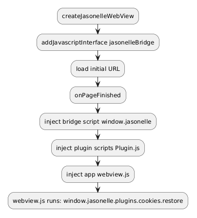

Android Source Project
The Android source project for Jasonelle. It is a native Kotlin app (Jetpack
Compose) that renders a website inside a WebView and bridges JavaScript calls
to native Kotlin plugins through a bidirectional message channel, mirroring the
iOS (Xcode) implementation.
Repository layout
| Path | Contents |
|---|---|
|
Gradle wrapper used to build every module. |
|
Declares the modules: |
|
The Android app module. Contains the Compose |
The core library: |
|
A sample plugin that demonstrates the native–JavaScript bridge. |
|
A plugin that reports device information to JavaScript. |
|
A plugin that persists web view cookies in encrypted storage. |
|
|
Local SDK path (gitignored, not committed). |
|
|
Architecture
Jasonelle Android follows the same layered architecture as the iOS project. The Application module owns the activity lifecycle and the registered plugin instances. The JLKernel module provides the web view, the JavaScript bridge and the message routing. The plugins modules implement native features callable from JavaScript.

The JavaScript Bridge
The bridge is a bidirectional message channel between the page loaded in the
WebView and native code.
-
The native side registers the
Coordinatoras a JavaScript interface namedjasonelleBridgewithaddJavascriptInterface. -
JasonelleBridge.JS_BRIDGE_SCRIPTdefineswindow.jasonellewithpost(name, args),result.resolve,result.rejectandplugin.init. -
Each plugin’s
Plugin.jsregisters itself onwindow.jasonelle.plugins.<name>. -
poststringifies{ name, args, callbackId }and callswindow.jasonelleBridge.postMessage(json). -
The
Coordinator.postMessage(@JavascriptInterface) parses the JSON, looks up the plugin and invokeshandle_call(callbackId, args, respond). Plugins reply throughresolveorreject, which evaluatewindow.jasonelle.result.resolve|reject(…)back in the page on the main thread.
Because the bridge script also installs a window.webkit.messageHandlers.*
shim, the same Plugin.js files work unchanged on Android and iOS.

The message body (JSON stringified by post) is:
{ "name": "com.jasonelle.plugins.hello", "args": ["Hello", "World"], "callbackId": "<uuid>" }name is the plugin id (reverse domain notation), which is also the key in
the plugins map registered by the application.
Script injection
Android WebView has no document-start/end user scripts, so the bridge, plugin
and app scripts are all evaluated from onPageFinished, in the same order as
iOS injects them. The jasonelleBridge native interface is available before
the first load, so early page code can still call it.


JLKernel components
| Component | Responsibility |
|---|---|
|
Compose composable built on |
|
|
|
Holds |
|
Base class every plugin subclasses. Provides |
|
Enum of native events with a static plugin registry, |
|
Loads |
|
Structured logging with |
|
Reads the bundled |
|
Verifies a Jasonelle license key. |
Plugins
Each plugin is an independent Gradle module that subclasses JLKernel.Plugin
(imported as KernelPlugin to avoid the class-name clash). Plugins are
composed by the Application in Plugins.kt, which instantiates them; the
Cookies plugin receives the application Context. Keys must match the plugin
id used in JavaScript (window.jasonelle.plugins.<name>).
| Plugin | Native API | JS object |
|---|---|---|
|
|
|
|
|
|
|
|
Development
-
Build all modules with
task build(./gradlew assembleDebug). -
Run
task test(./gradlew test) for the JVM unit tests in every module (JLKernelTests,JLPluginHelloTests,JLPluginDeviceTests,JLPluginCookiesTests). -
Build just the app APK with
task assemble(./gradlew :Application:assembleDebug), output inApplication/build/outputs/apk/debug/. -
Run lint with
task lint. -
Every plugin ships a
docs/<Plugin>.mdfile describing its native code and JavaScript bridge.